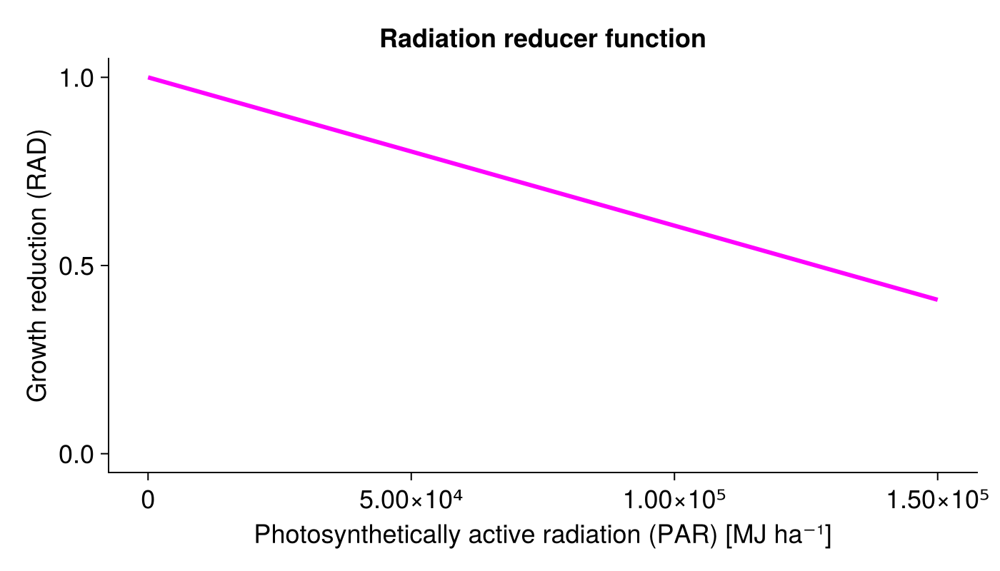
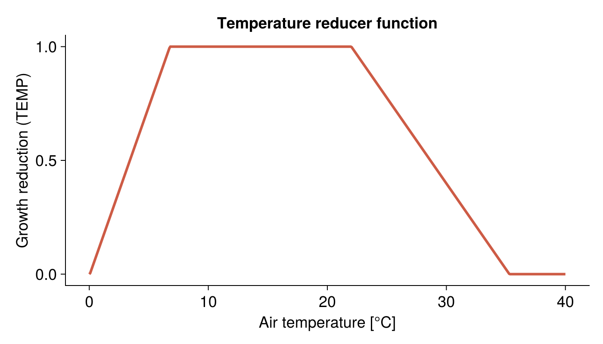
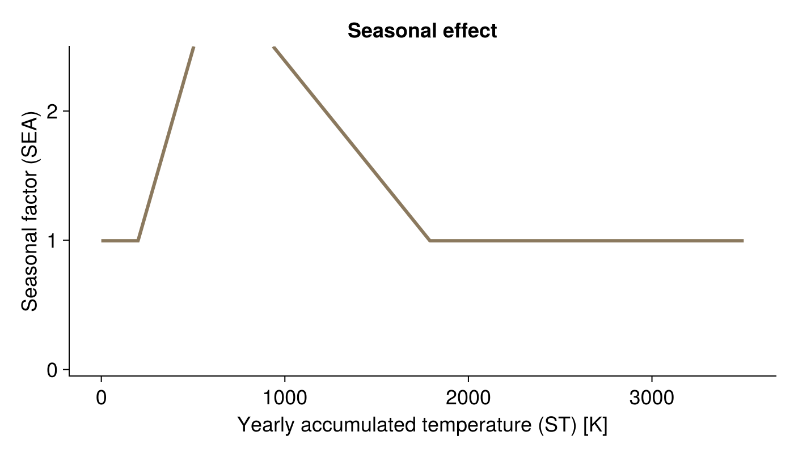

Community growth adjustment by environmental and seasonal factors
The listed functions limit the growth potential of all plant species without any species-specific reduction:
- ☀ the photosynthetically active radiation
radiation_reduction! - 🌡 the air temperature
temperature_reduction! - 📈 a seasonal effect, that is modelled by the accumulated degree days
seasonal_reduction!
Radiation influence
GrasslandTraitSim.radiation_reduction! — Functionradiation_reduction!(; container, PAR)
Reduction of radiation use efficiency at high radiation levels.
\[RAD_{txy} = \min\left(1,\, 1-\gamma_1\left(PAR_{txy} - \gamma_2\right)\right)\]
The equations and the parameter values are taken from [7].
Parameter, see also SimulationParameter:
- $\gamma_1$ (
γ₁) controls the steepness of the linear decrease in radiation use efficiency for high $PAR_{txy}$ values [MJ⁻¹ ha] - $\gamma_2$ (
γ₂) threshold value of $PAR_{txy}$ from which starts a linear decrease in radiation use efficiency [MJ ha⁻¹]
Variables:
- $PAR_{txy}$ (
PAR) photosynthetic active radiation [MJ ha⁻¹]
Output:
- $RAD_{txy}$ (
RAD) growth reduction factor based on too high radiation [-]

Temperature influence
GrasslandTraitSim.temperature_reduction! — Functiontemperature_reduction!(; container, T)
Reduction of the growth if the temperature is low or too high.
\[TEMP_{txy} = \begin{cases} 0 & \text{if } T_{txy} < T_0 \\ \frac{T_{txy} - T_0}{T_1 - T_0} & \text{if } T_0 < T_{txy} < T_1 \\ 1 & \text{if } T_1 < T_{txy} < T_2 \\ \frac{T_3 - T_{txy}}{T_3 - T_2} & \text{if } T_2 < T_{txy} < T_3 \\ 0 & \text{if } T_{txy} > T_3 \\ \end{cases}\]
Equation are from [8] and theses are based on [7].
Parameter, see also SimulationParameter:
- $T_0$ (
T₀) minimum temperature for growth [°C] - $T_1$ (
T₁) lower limit of optimum temperature for growth [°C] - $T_2$ (
T₂) upper limit of optimum temperature for growth [°C] - $T_3$ (
T₃) maximum temperature for growth [°C]
Variables:
- $T_{txy}$ (
temperature) mean air temperature [°C]
Output:
- $TEMP_{txy}$ (
TEMP) temperature growth factor [-]

Seasonal effect
GrasslandTraitSim.seasonal_reduction! — Functionseasonal_reduction!(; container, ST)
Reduction of growth due to seasonal effects. The function is based on the yearly cumulative sum of the daily mean temperatures.
\[\begin{align*} SEA_{txy} &= \begin{cases} SEA_{\text{min}} & \text{if}\;\; ST_{txy} < 200\,\mathrm{K} \\ SEA_{\text{min}} + (SEA_{\text{max}} - SEA_{\text{min}}) \cdot \frac{ST_{txy} - 200\,\mathrm{K}}{ST_1 - 400\,\mathrm{K}} & \text{if}\;\; 200\,\mathrm{K} < ST_{txy} < ST_1 - 200\,\mathrm{K} \\ SEA_{\text{max}} & \text{if}\;\; ST_1 - 200\,\mathrm{K} < ST_{txy} < ST_1 - 100\,\mathrm{K} \\ SEA_{\text{min}} + (SEA_{\text{min}} - SEA_{\text{max}}) \cdot \frac{ST_{txy} - ST_2}{ST_2 - ST_1 - 100\,\mathrm{K}} & \text{if}\;\; ST_1 - 100\,\mathrm{K} < ST_{txy} < ST_2 \\ SEA_{\text{min}} & \text{if}\;\; ST_{txy} > ST_2 \end{cases} \\ ST_{txy} &= \sum_{i=t\bmod{365}}^{t} \max\left(0\,\mathrm{K},\, T_{ixy} - 0\,\mathrm{°C}\right) \end{align*}\]
This empirical function was developed by [8]. A seasonal factor greater than one means that growth is increased by the use of already stored resources. A seasonal factor below one means that growth is reduced as the plant stores resources [8].
Parameter, see also SimulationParameter:
- $ST_1$ (
ST₁) is a threshold of the yearly accumulated temperature, above which the seasonality factor decreases from $SEA_{\text{max}}$ to $SEA_{\text{min}}$ [K] - $ST_2$ (
ST₂) is a threshold of the yearly accumulated temperature, above which the seasonality factor is set to $SEA_{\text{min}}$ [K] - $SEA_{\text{min}}$ (
SEA_min) is the minimum value of the seasonal effect [-] - $SEA_{\text{max}}$ (
SEA_max) is the maximum value of the seasonal effect [-]
Variables:
- $ST_{txy}$ (
ST) yearly cumulative mean air temperature [K] - $T_{txy}$ (
temperature) mean air temperature [°C]
Output:
- $SEA_{txy}$ (
SEA) seasonal growth factor [-]
